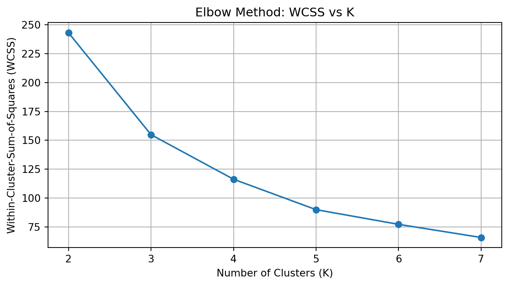
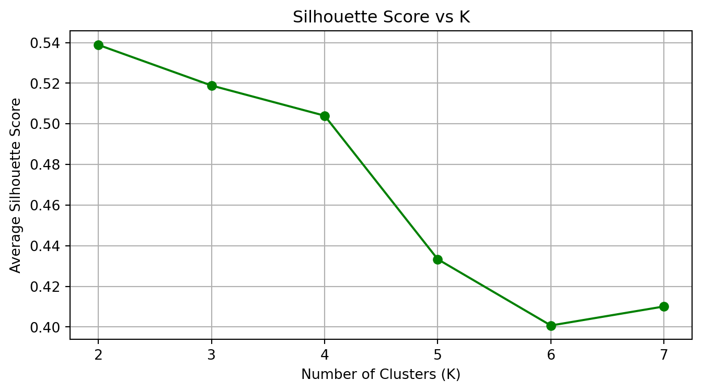
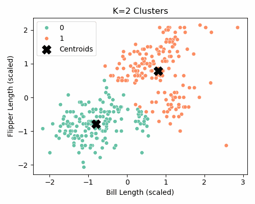

We use the Palmer Penguins dataset, which contains biological measurements for three penguin species in Antarctica. For this exercise, we focus on two numeric features:
bill_length_mm: Length of the penguin’s bill (beak).
flipper_length_mm: Length of the penguin’s flippers.
These two variables are useful for segmenting penguins based on physical characteristics, mimicking an unsupervised clustering task.
All features were standardized using StandardScaler to ensure comparable distances between observations.
Custom Implementation of K-Means
We implemented K-Means from scratch, following the standard algorithm:
Randomly initialize centroids
Assign each point to the closest centroid
Recompute centroids as the average of each cluster
Clustering produced three distinct groups based on bill and flipper length.
Feature scaling was essential to prevent one variable from dominating distance calculations.
Our custom implementation provided clear visibility into the algorithm’s inner workings.
The scikit-learn version offered faster convergence with similar clustering boundaries.
Optimal Number of Clusters: Elbow & Silhouette Methods
To determine the ideal number of clusters for K-means, we used two complementary metrics:
Elbow Method – measuring the Within-Cluster-Sum-of-Squares (WCSS)
Silhouette Score – evaluating cluster separation and cohesion
We calculated both metrics for K = 2 through K = 7.
import pandas as pdimport numpy as npimport matplotlib.pyplot as pltfrom sklearn.preprocessing import StandardScalerfrom sklearn.cluster import KMeansfrom sklearn.metrics import silhouette_score# Load and prepare the datasetdf = pd.read_csv("palmer_penguins.csv")df_clean = df[["bill_length_mm", "flipper_length_mm"]].dropna()scaler = StandardScaler()X_scaled = scaler.fit_transform(df_clean)# Initialize tracking listsk_values =range(2, 8)wcss = []silhouette_scores = []# Loop through each Kfor k in k_values: model = KMeans(n_clusters=k, random_state=42, n_init=10) labels = model.fit_predict(X_scaled) wcss.append(model.inertia_) # Sum of squared distances to closest cluster center silhouette_scores.append(silhouette_score(X_scaled, labels))# Plot WCSS (Elbow Method)plt.figure(figsize=(8, 4))plt.plot(k_values, wcss, marker='o')plt.title("Elbow Method: WCSS vs K")plt.xlabel("Number of Clusters (K)")plt.ylabel("Within-Cluster-Sum-of-Squares (WCSS)")plt.xticks(k_values)plt.grid(True)plt.show()# Plot Silhouette Scoresplt.figure(figsize=(8, 4))plt.plot(k_values, silhouette_scores, marker='o', color='green')plt.title("Silhouette Score vs K")plt.xlabel("Number of Clusters (K)")plt.ylabel("Average Silhouette Score")plt.xticks(k_values)plt.grid(True)plt.show()


Elbow Plot
The Elbow Method suggests that K = 3 is a reasonable choice. While WCSS decreases as K increases, the rate of improvement slows after K = 3, indicating diminishing returns.
Silhouette Plot
The Silhouette Score also supports K = 3 as a good candidate. While K = 2 gives the highest score, K = 3 balances performance with richer clustering structure.
K-Means Cluster Visualizations
Below are the clustering results for different values of K, from 2 to 7. Each figure shows the decision boundaries and centroids.
To visually demonstrate how K-means iteratively refines clusters, we created an animation showing how the centroids move and cluster assignments evolve.
import imageioimport os# List of filenames in orderfilenames = [f"kmeans_k{k}.png"for k inrange(2, 8)]# Create animated GIFwith imageio.get_writer("kmeans_progress.gif", mode="I", duration=0.8) as writer:for filename in filenames:if os.path.exists(filename): image = imageio.imread(filename) writer.append_data(image)else:print(f"Warning: {filename} not found!")
/tmp/ipykernel_311385/3126208424.py:11: DeprecationWarning:
Starting with ImageIO v3 the behavior of this function will switch to that of iio.v3.imread. To keep the current behavior (and make this warning disappear) use `import imageio.v2 as imageio` or call `imageio.v2.imread` directly.

KMeans Progress GIF
Summary
The Elbow Method suggests K = 3.
The Silhouette Score supports both K = 2 and K = 3, but K = 3 reveals more meaningful segmentation.
Visual inspection and biological interpretability also support K = 3 as the optimal number of clusters.
This multi-pronged evaluation provides strong evidence that K = 3 is the most appropriate choice for segmenting the Palmer Penguins dataset based on bill length and flipper length.
2b. Key Drivers Analysis
Dataset Overview
The dataset used for this analysis contains consumer survey responses regarding perceptions of a product or brand. Each row corresponds to a unique respondent, and each column captures a perception-related variable (e.g., trust, impact, service, etc.).
The target variable is satisfaction, a numeric outcome likely measuring how satisfied a customer is with the product or brand. All other columns (excluding identifiers like id and brand) serve as predictors, representing different perceived attributes of the offering.
Key Question: Which attributes most strongly drive consumer satisfaction?
Methods Used
We included the following variable importance techniques:
Pearson Correlation — assesses the linear relationship between each predictor and satisfaction.
Standardized Regression Coefficients — obtained from a linear regression using z-scored variables.
Usefulness (∆R²) — drop-one-out approach measuring R² reduction if a variable is removed.
Shapley Values (LMG) — computed using permutation importance on a linear model.
Johnson’s Relative Weights (Epsilon) — based on squared structure coefficients.
Gini Importance — extracted from a Random Forest model.
XGBoost Permutation Importance — calculated on an XGBoost regressor using scikit-learn’s permutation importance utility.
Each metric provides a different lens on variable influence, allowing us to triangulate which predictors consistently emerge as key drivers of satisfaction.
Click to expand full driver analysis code
import numpy as npfrom sklearn.linear_model import LinearRegressionfrom sklearn.ensemble import RandomForestRegressorfrom sklearn.inspection import permutation_importancefrom sklearn.preprocessing import StandardScalerfrom sklearn.metrics import r2_scorefrom scipy.stats import pearsonrimport pandas as pd# Load the datasetdf = pd.read_csv("data_for_drivers_analysis.csv")# Correct 'satisfaction' as the target variable instead of 'y'X = df.drop(columns=["satisfaction", "id", "brand"])y = df["satisfaction"]# Standardize variablesscaler = StandardScaler()X_scaled = pd.DataFrame(scaler.fit_transform(X), columns=X.columns)y_scaled = StandardScaler().fit_transform(y.values.reshape(-1, 1)).ravel()# Pearson correlationspearson_corrs = [pearsonr(X[col], y)[0] for col in X.columns]# Standardized regression coefficientsreg = LinearRegression().fit(X_scaled, y_scaled)standardized_coefs = reg.coef_# Usefulness: change in R^2 when a variable is droppedbase_r2 = r2_score(y_scaled, reg.predict(X_scaled))usefulness = []for col in X.columns: temp_X = X_scaled.drop(columns=col) temp_model = LinearRegression().fit(temp_X, y_scaled) temp_r2 = r2_score(y_scaled, temp_model.predict(temp_X)) usefulness.append(base_r2 - temp_r2)# Shapley values approximation using permutation importance on a linear modelshap_model = LinearRegression().fit(X_scaled, y_scaled)shap_importance = permutation_importance(shap_model, X_scaled, y_scaled, n_repeats=30, random_state=0)shap_values = shap_importance.importances_mean# Johnson’s relative weights approximation using squared structure coefficientscor_matrix = np.corrcoef(X_scaled.T)eigenvalues, eigenvectors = np.linalg.eig(cor_matrix)structure_coeffs = np.corrcoef(X_scaled.T, reg.predict(X_scaled))[0:X.shape[1], -1]epsilon_weights = (structure_coeffs **2) * np.var(X_scaled, axis=0)epsilon_weights = epsilon_weights / epsilon_weights.sum()# Random forest Gini importancerf = RandomForestRegressor(n_estimators=100, random_state=0)rf.fit(X_scaled, y_scaled)gini_importance = rf.feature_importances_# Combine all metrics into a tableresults_df = pd.DataFrame({"Variable": X.columns,"Pearson Corr": np.round(pearson_corrs, 3),"Standardized Coef": np.round(standardized_coefs, 3),"Usefulness (∆R²)": np.round(usefulness, 3),"Shapley (LMG)": np.round(shap_values, 3),"Johnson's Epsilon": np.round(epsilon_weights, 3),"Gini Importance": np.round(gini_importance, 3)})results_df = results_df.sort_values(by="Gini Importance", ascending=False).reset_index(drop=True)
import xgboost as xgbfrom sklearn.inspection import permutation_importance# Fit XGBoost modelxgb_model = xgb.XGBRegressor(objective="reg:squarederror", random_state=0)xgb_model.fit(X_scaled, y_scaled)# Permutation importance on XGBoostperm_importance = permutation_importance(xgb_model, X_scaled, y_scaled, n_repeats=30, random_state=0)perm_scores = perm_importance.importances_mean# Append to results tableresults_df["XGB Permutation Importance"] = np.round(perm_scores, 3)# Sort by one of the new metrics if preferredresults_df = results_df.sort_values(by="Pearson Corr", ascending=False).reset_index(drop=True)display(results_df)
Variable
Pearson Corr
Standardized Coef
Usefulness (∆R²)
Shapley (LMG)
Johnson's Epsilon
Gini Importance
XGB Permutation Importance
0
trust
0.256
0.116
0.008
0.027
0.156
0.168
0.204
1
impact
0.255
0.128
0.011
0.033
0.154
0.134
0.134
2
service
0.251
0.088
0.005
0.015
0.150
0.126
0.120
3
easy
0.213
0.022
0.000
0.001
0.108
0.100
0.140
4
appealing
0.208
0.034
0.001
0.003
0.103
0.081
0.178
5
rewarding
0.195
0.005
0.000
0.000
0.090
0.106
0.149
6
build
0.192
0.020
0.000
0.001
0.088
0.100
0.139
7
differs
0.185
0.028
0.001
0.002
0.081
0.090
0.167
8
popular
0.171
0.017
0.000
0.000
0.070
0.096
0.143
Observations
trust, impact, and service consistently appear as top drivers across all metrics.
Tree-based models (Random Forest, XGBoost) and permutation-based methods show broader variable importance patterns, while linear techniques are more concentrated.
The new XGBoost importance metric helps validate the linear models and adds robustness to the conclusions.
This comprehensive multi-method analysis strengthens the reliability of the key drivers identified and ensures consistency across modeling approaches.
Conclusion
This assignment showcased two distinct applications of machine learning:
Unsupervised Learning (K-Means) – We explored the Palmer Penguins dataset to segment penguins using a custom K-Means algorithm. The iterative visualization helped us understand how centroids shift over time, and our results aligned well with the scikit-learn implementation. Both the Elbow Method and Silhouette Score pointed to K = 3 as the optimal number of clusters, consistent with the biological species separation.
Supervised Learning (Key Drivers Analysis) – Using the drivers dataset, we quantified the importance of various predictors for “satisfaction” using multiple techniques: Pearson correlation, standardized regression, usefulness (∆R²), Shapley values, Johnson’s relative weights, and tree-based feature importances. We also extended the analysis using XGBoost permutation importance, adding robustness and depth.
Key Takeaways
Machine learning is not just about prediction – it’s a powerful tool for explanation and discovery.
K-Means is an intuitive unsupervised method, especially effective when visualized step-by-step.
Key Drivers Analysis provides actionable insight into what matters most for influencing outcomes.
Combining multiple metrics (linear + tree-based + shapley) strengthens the reliability of results.
Both components of this assignment reinforced how different ML approaches uncover structure in data — whether through clustering or quantifying variable impact. These methods are essential for segmenting populations and prioritizing interventions, skills valuable in both business and research.